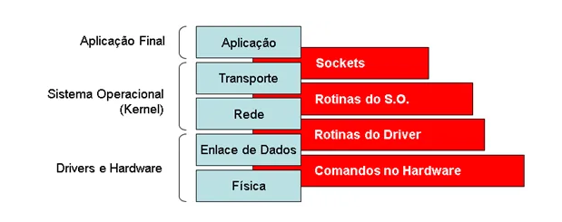

Sockets
Sockets permitem a comunicação entre dois processos (programas) diferentes na mesma máquina ou
em máquinas diferentes. Isso quer dizer que usamos Sockets quando desejamos orquestrar a
comunicação entre computadores diferentes ou mesmo entre dois programas (processos) que estão
executando dentro do mesmo computador.
A figura abaixo representa a comunicação via socket entre dois computadores distintos. Observe
que cada computador desempenha um papel na comunicação: a) aquele denominado cliente é quem
inicia a comunicação, b) por outro lado, o servidor é aquele que aguarda indefinidamente por
alguma solicitação de comunicação originada do cliente. Além disso, é possível notar que
existe um valor numérico associado a comunicação, esse valor é referenciado como Porta.
Sua finalidade é permitir com que cada computador possa realizar diversas operações de
comunicação, sem que uma interfira na outra. Na figura abaixo, observamos que o Cliente
faz uma solicitação de comunicação com o Servidor usando um Socket na Porta 23, na
sequência, o Servidor responde usando um Socket na Porta 2324.
Em termos práticos, sempre que você abre o seu navegador e digita o endereço de alguma
página Web (wwww.google.com.br), um Socket é criado pelo navegador. Neste caso, você é o
Cliente e o computador em que a página Web está armazenada é o Servidor. Nesse contexto,
o usuário final (você) não tem ciência de um conjunto de etapas que ocorre internamente
dentro do sistema operacional (Windows/Linux/Mac) do Servidor e do Cliente.
De forma genérica, a figura abaixo denota o conjunto etapas na qual a comunicação via Socket
passa dentro de cada computador. No caso do Cliente, o navegador pode ser visto como uma
interface gráfica que interage com a camada de Aplicação solicitando a criação de um conjunto
de estruturas que descrevem um Socket dentro do sistema operacional (S.O.). Depois, em cada
camada, um tipo de serviço é selecionado, configurado e repassado para a camada mais abaixo.
Note que essas camadas podem ser agrupadas conforme o local de atuação de cada uma: Aplicação
Final (Navegador), Sistema Operacional (Windows, Linux, Mac), Drivers/Hardware (componentes
físicos do computador, exemplo placa de rede).

A figura abaixo denota de forma resumida alguns exemplos dos “tipos de serviços” oferecidos
por cada camada de comunicação. No nível da camada de aplicação, geralmente o navegador
faz uma comunicação usando o protocolo HTTP ou HTTPS. Estes permitem a obtenção de
recursos, tais como documentos HTML que são a base de toda página Web. Neste ponto,
é importante dizer que cada protocolo da camada de aplicação tem associado a ele uma
porta padrão de operação, no caso do protocolo HTTP a porta 80 é o padrão universal,
no HTTPS temos a porta 443, o FTP tem a porta 23, etc. Na sequência (Camada de
Transporte), escolhe-se como a comunicação irá tratar a entrega de dados. Neste caso,
se usar TCP temos a garantia de que nenhuma parte dos dados transmitidos serão
perdidos. Por outro lado, se usar UDP isso quer dizer que pode haver perda de dados.
Seguindo, na camada de Rede, escolhemos um protocolo que descreve o endereço do
destinatário (p/ o Navegador o destino é o Servidor). Por fim, na cama de Enlace
escolhemos o protocolo de comunicação dos elementos físicos da rede, ou seja, a
placa de rede, o roteador, etc. Atualmente, o padrão prevalecente na Internet
é o protocolo Ethernet.

No nível do Sistema Operacional, em geral uma conexão entre dois computadores descrita por
um Socket tem alguns componentes básicos. Tomando como referência o cliente da primeira
figura (ver acima), temos: a) ID do processo (Navegador no cliente), b) Endereço de origem
(IP do cliente — 10.1.1.5), c) Porta de Saída (23), d) Endereço de Destino
(IP do Servidor — 10.1.1.1), e) Porta de Entrada (2324).
2. Fluxo de Comandos para Implementar Socket
Para implementar um software que realizada a comunicação por Socket é necessário definir
e/ou entender o fluxo dos comandos da linguagem de programação usando no software que irá
atuar como cliente e no software que irá atuar como servidor (ver figura abaixo).
Analisando o fluxo no servidor temos:
1. Socket: neste ponto temos um comando para dizer ao Sistema Operacional que desejamos
criar um socket com determinadas características. Em geral, as características são
relacionadas a família do protocolo que estamos usando (exemplos: AF_INET — para endereços
de rede IPv4, AF_BLUETOOTH — comunicação via Bluetooth, AF_IPX — comunicação via rede
Novel IPX) e a forma com que o socket irá tratar a entrega de dados
(SOCKET_STREAM — protocolo TCP na camada de transporte, SOCK_DGRAM — protocolo UDP na
camada de transporte).
3. Bind: realiza a associação entre a estrutura socket e o endereço/porta do servidor.
Tomando como exemplo o diagrama da primeira figura deste tutorial, o comando “bind”
vincula o endereço 10.1.1.1 do servidor e a porta 23 ao socket que foi criado pelo sistema
operacional do servidor.
4. Listen: coloca o socket em operação, neste caso, o servidor entra no estado de aguardar
por alguma solicitação de clientes que desejam se comunicar. O método listen geralmente
recebe um número como parâmetro, indicando a quantidade de conexões que serão enfileiradas
pelo protocolo TCP até que o servidor realize o próximo passo, ou seja o comando accept.
5. Accept: esse comando aceita conexões de clientes, retornando uma tupla da conexão
realizada. Neste caso a tupla contém o endereço do cliente que solicitou a comunicação,
bem como um File Descriptor usado para receber e enviar dados para este cliente.
6. Recv, Send: estes comandos são usados para receber e enviar dados, respectivamente.
Esses comandos são usados de forma conjunta e intercalados. Isso quer dizer que: se o
cliente está executando o comando Send, então o servidor deve estar executando o comando
Recv (o oposto também deve ser seguido).
7. Close: Esse comando encerra uma dada conexão entre o cliente e o servidor.
Analisando o fluxo no cliente temos:
1. Socket: neste ponto temos um comando para dizer ao Sistema Operacional que desejamos
criar um socket com determinadas características. Em geral, as características são
relacionadas a família do protocolo que estamos usando (exemplos: AF_INET — para endereços
de rede IPv4, AF_BLUETOOTH — comunicação via Bluetooth, AF_IPX — comunicação via rede
Novel IPX) e a forma com que o socket irá tratar a entrega de dados
(SOCKET_STREAM — protocolo TCP na camada de transporte, SOCK_DGRAM — protocolo UDP na
camada de transporte).
2. connect: este comando é usado para ordenar ao socket do cliente que se conecte a um
determinado socket no servidor. Por este motivo, esse comando tem dois parâmetros:
Endereço do servidor e Porta do Servidor. Novamente, tomando como exemplo o primeiro
diagrama deste tutorial, o endereço do servidor é o IP 10.1.1.1 e a porta é a 23.
3. Recv, Send: estes comandos são usados para receber e enviar dados, respectivamente.
Esses comandos são usados de forma conjunta e intercalados. Isso quer dizer que: se o
cliente está executando o comando Send, então o servidor deve estar executando o comando
Recv (o oposto também deve ser seguido).
4. Close: Esse comando encerra uma dada conexão entre o cliente e o servidor.
3. Implementando o Servidor e Cliente em Python
Para executar, execute em uma janela de terminal do python o código do servidor. Depois,
abra outra janela de terminal do python e execute o código do cliente.
Ao executar os dois códigos, você irá observar que este exemplo de se trata de um servidor
replicador de mensagens. Isso quer dizer que o servidor irá imprimir na tela toda e
qualquer mensagem recebida dos clientes e, logo depois, essa mesma mensagem será enviada
de volta ao cliente. Note ainda que o servidor irá fazer isso no máximo três vezes
(Linha 25 do servidor.py), isso quer dizer que após três conexões de clientes, o servidor
será automaticamente desativado. Além disso, pelo código é possível observar que o
servidor irá escutar a comunicação pela porta 8082 (esse valor foi escolhido de forma
aleatória). Por teste motivo, no código do cliente, também usamos essa mesma porta.
Caso você mude a porta do servidor, você também deverá mudar no cliente.
No cliente, na parte que recebe a mensagem do servidor (Linha 14–20), o código foi alterado
para os dados recebidos do servidor sejam entregues de 16 em 16 bytes (Linha 18), por este
motivo colocamos o recebimento (recv) dentro de uma estrutura de repetição. Por outro
lado, no servidor, recebemos todos os dados de uma só vez (note que o parâmetro do
comando recv no servidor é 2048, permitindo que todos os caracteres do cliente sejam
recebidos de uma vez).